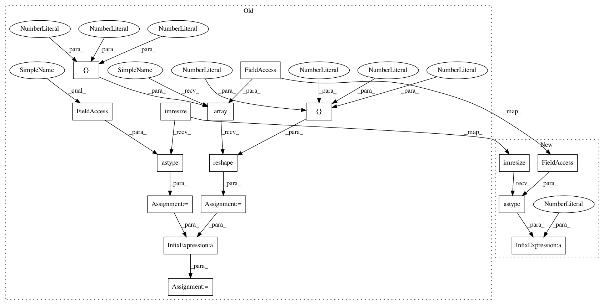

b0199525a691c3382eefc3487e82dbdbde78d39b,examples/pretrained_cnn/tutorial_models_vgg_static.py,,,#,13
Before Change
y = vgg(x, is_train=False)
img1 = tl.vis.read_image("data/tiger.jpeg")
img1 = tl.prepro.imresize(img1, (224, 224))
img1 = img1.astype(np.float32)
mean = np.array([123.68, 116.779, 103.939], dtype=np.float32).reshape([1, 1, 1, 3])
img1 = img1 - mean
start_time = time.time()
output = sess.run(y, feed_dict={x: img1})
probs = tf.nn.softmax(output)[0].eval()
print(" End time : %.5ss" % (time.time() - start_time))
preds = (np.argsort(probs)[::-1])[0:5]
for p in preds:
After Change
vgg = tl.models.vgg16(pretrained=True, mode="static")
img = tl.vis.read_image("data/tiger.jpeg")
img = tl.prepro.imresize(img, (224, 224)).astype(np.float32) / 255
start_time = time.time()
output = vgg(img, is_train=False)
probs = tf.nn.softmax(output)[0].numpy()
In pattern: SUPERPATTERN
Frequency: 4
Non-data size: 16
Instances
Project Name: tensorlayer/tensorlayer
Commit Name: b0199525a691c3382eefc3487e82dbdbde78d39b
Time: 2019-04-30
Author: 37874862+warshallrho@users.noreply.github.com
File Name: examples/pretrained_cnn/tutorial_models_vgg_static.py
Class Name:
Method Name:
Project Name: tensorlayer/tensorlayer
Commit Name: b0199525a691c3382eefc3487e82dbdbde78d39b
Time: 2019-04-30
Author: 37874862+warshallrho@users.noreply.github.com
File Name: examples/pretrained_cnn/tutorial_models_vgg16.py
Class Name:
Method Name:
Project Name: tensorlayer/tensorlayer
Commit Name: b0199525a691c3382eefc3487e82dbdbde78d39b
Time: 2019-04-30
Author: 37874862+warshallrho@users.noreply.github.com
File Name: examples/pretrained_cnn/tutorial_models_vgg19.py
Class Name:
Method Name:
Project Name: tensorlayer/tensorlayer
Commit Name: b0199525a691c3382eefc3487e82dbdbde78d39b
Time: 2019-04-30
Author: 37874862+warshallrho@users.noreply.github.com
File Name: examples/pretrained_cnn/tutorial_models_vgg_static.py
Class Name:
Method Name:
Project Name: tensorlayer/tensorlayer
Commit Name: b0199525a691c3382eefc3487e82dbdbde78d39b
Time: 2019-04-30
Author: 37874862+warshallrho@users.noreply.github.com
File Name: examples/pretrained_cnn/tutorial_models_vgg.py
Class Name:
Method Name: